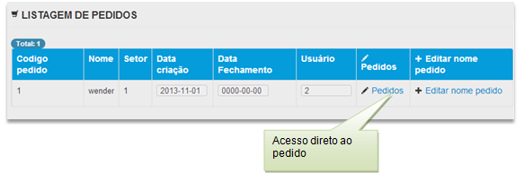
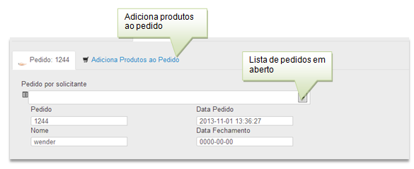
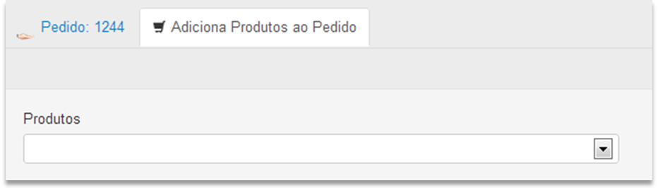
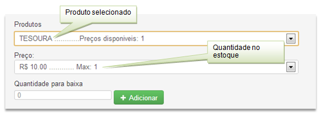
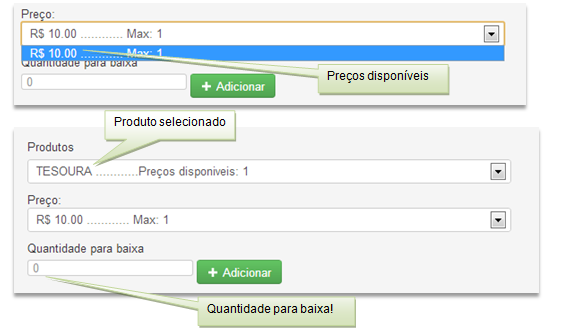

Listagem dos pedidos em aberto

Acesso direto ao pedido
Acesso direto a opção para alterar o nome do pedido
Após criação de um pedido

Ao clicar no combo-box aparecerá todos os pedidos em aberto pelo nome do solicitante juntamente com o número do pedido
Ao selecionar o pedido já podemos realizar a baixa dos produtos através da opção

Na opção produtos aparecerá o nome do produtos e a quantidade de preços disponível para utilização

Atenção: sempre clicar no preço para realizar a baixa do menor preço primeiro. Ao realizar uma nova compra de materiais antes do estoque estiverzerado ocasiona a situação abaixo, lembre-se de realizar a baixa do preço antigo antes do novo preço

Created with the Personal Edition of HelpNDoc: Free Web Help generator